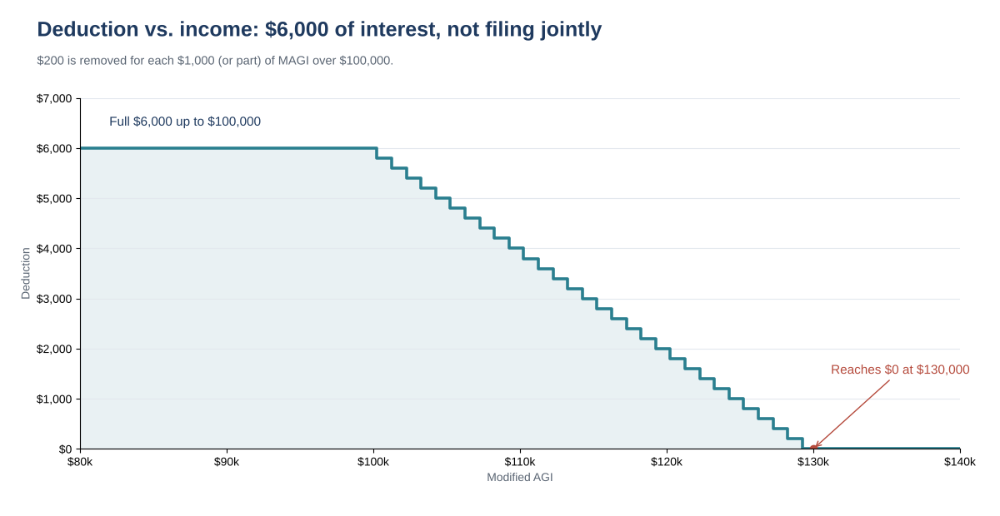

Interest on a personal car loan used to be one of those things you could never deduct. That changed with the 2025 tax law. For tax years 2025 through 2028, many people who bought a new, US-assembled vehicle with a loan can deduct up to $10,000 of the interest each year, even if they take the standard deduction.
The catch is in the details: the vehicle has to be new, the loan has to be recent and secured by the car, the car has to be assembled in the US, and the deduction shrinks as income rises. This guide covers who qualifies, the five-step calculation and four worked examples.
Who this is for: people who financed a new car, SUV, pickup or motorcycle for personal use after 2024 and want to know, before filing, whether the interest they pay in 2026 lowers their federal tax and by how much.
All seven must be true. One "no" means the interest does not count for this deduction.
Look at the vehicle information label (window sticker) from the dealer: it lists the final assembly point. You can also enter the VIN in the free NHTSA VIN Decoder, which shows the plant of manufacture. Save a screenshot or copy of whichever you use with your tax records.
Refinanced? Interest on a refinanced qualifying loan is generally still eligible, up to the original balance. If you took cash out or added a borrower, ask your tax professional.
| A | B | C | D | |
|---|---|---|---|---|
| Filing status | Not joint | Not joint | Joint | Not joint |
| MAGI | $85,000 | $112,500 | $230,000 | $150,000 |
| Interest paid in 2026 | $3,200 | $4,000 | $11,000 | $6,000 |
| Step 2: after $10,000 cap | $3,200 | $4,000 | $10,000 | $6,000 |
| Step 3: over threshold | $0 | $12,500 | $30,000 | $50,000 |
| Step 4: $1,000 steps (round up) | 0 | 13 | 30 | 50 |
| Step 5: reduction (× $200) | $0 | $2,600 | $6,000 | $10,000 |
| Deduction | $3,200 | $1,400 | $4,000 | $0 |

The chart below shows how quickly the deduction fades. With $6,000 of interest and a single filer, the full amount holds up to $100,000 of MAGI and reaches zero by $130,000.

A deduction lowers taxable income, not your tax bill dollar for dollar. Multiply the deduction by your top federal bracket for a rough estimate. In example A, a $3,200 deduction is worth about $384 at a 12% bracket or about $704 at 22%. State tax treatment depends on your state.
| When | What |
|---|---|
| Now | Save the purchase contract, loan agreement (shows the origination date and lien) and the window label or VIN result |
| Each month | Keep lender statements; they show interest paid |
| Early 2027 | Lender's statement of 2026 interest |
| April 15, 2027 | 2026 federal return due for most filers |
| 2025 to 2028 | Tax years this deduction applies to |
Keep these records generally for 3 years from the date you file the return that claims the deduction.
You can download the ready-made Car Loan Interest Deduction Calculator 2026 for free in the Free kit download box below. It has the eligibility questions, an interest log, a three-input calculator with the phase-out math folded away and these four examples, with a 4-page PDF guide.
This article is for education only and is not tax, legal or financial advice. It does not cover leases, used or business vehicles, or state tax rules. The 2026 form and instructions may differ from 2025; confirm your situation with a qualified tax professional.